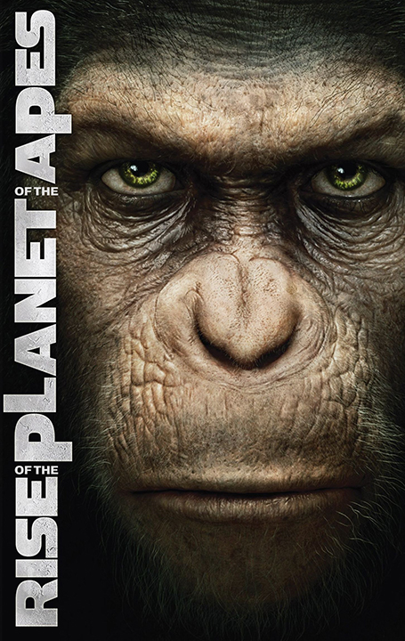

-

- Actie
- Avontuur


Rise of the Planet of the Apes
Rise of the Planet of the Apes is een Amerikaanse sciencefictionfilm uit 2011, geregisseerd door Rupert Wyatt. De hoofdrollen worden vertolkt door James Franco, Freida Pinto, John Lithgow en Andy Serkis. De première was op 5 augustus 2011.
De film is losjes gebaseerd op het boek De Apenplaneet, en dient als reboot van de eveneens op dit boek gebaseerde filmreeks uit de jaren 70. Het verhaal is in grote lijnen gelijk aan dat van de vierde film uit de originele reeks; Conquest of the Planet of the Apes (1972).